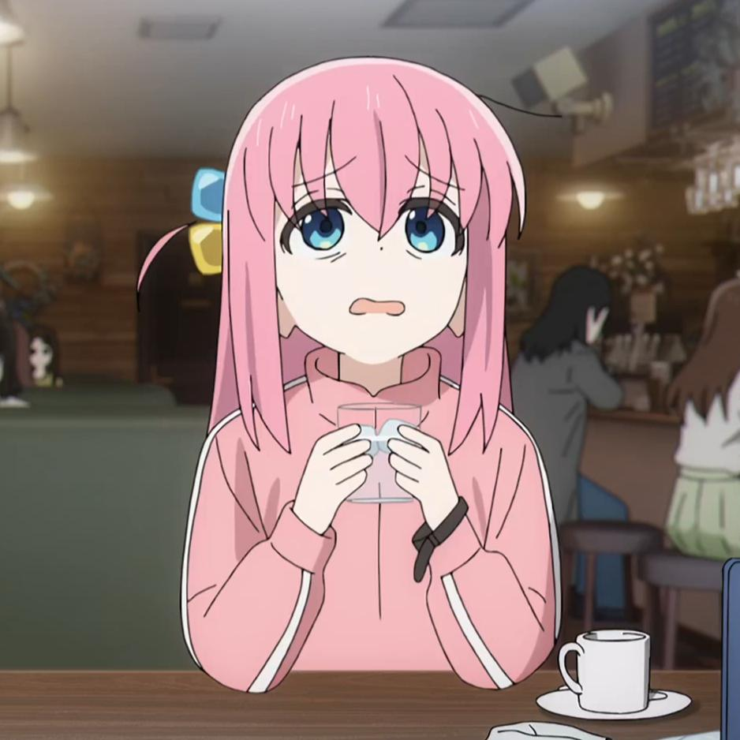
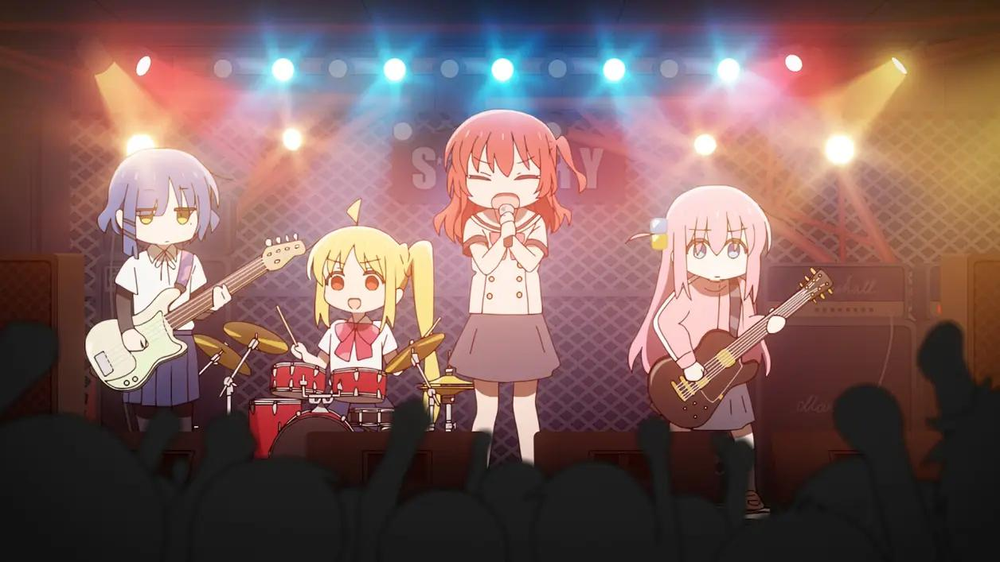
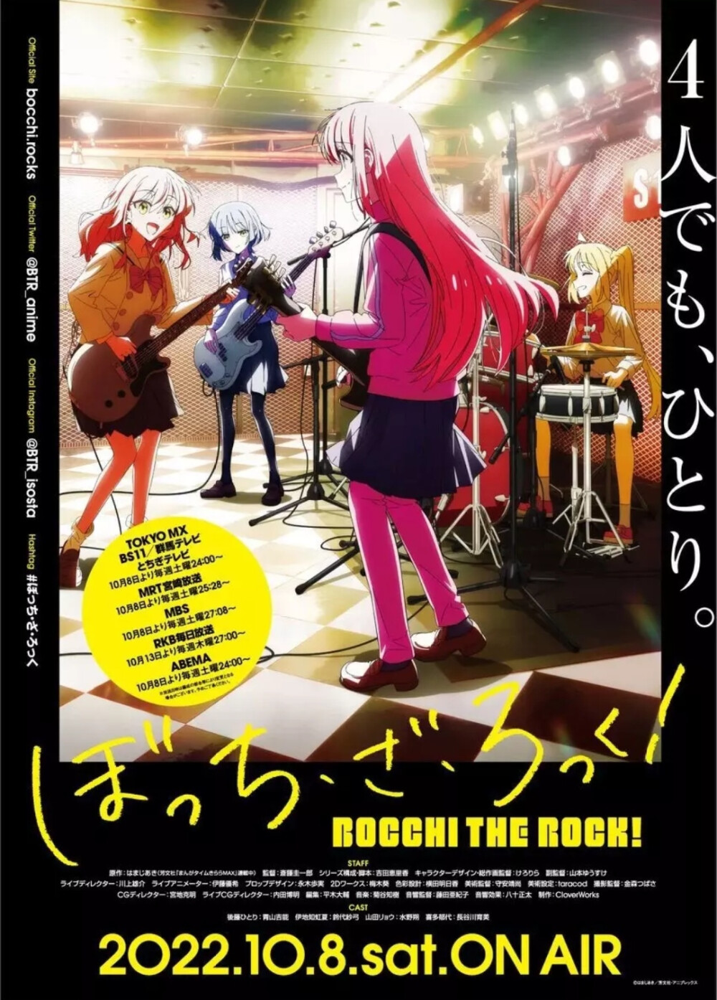
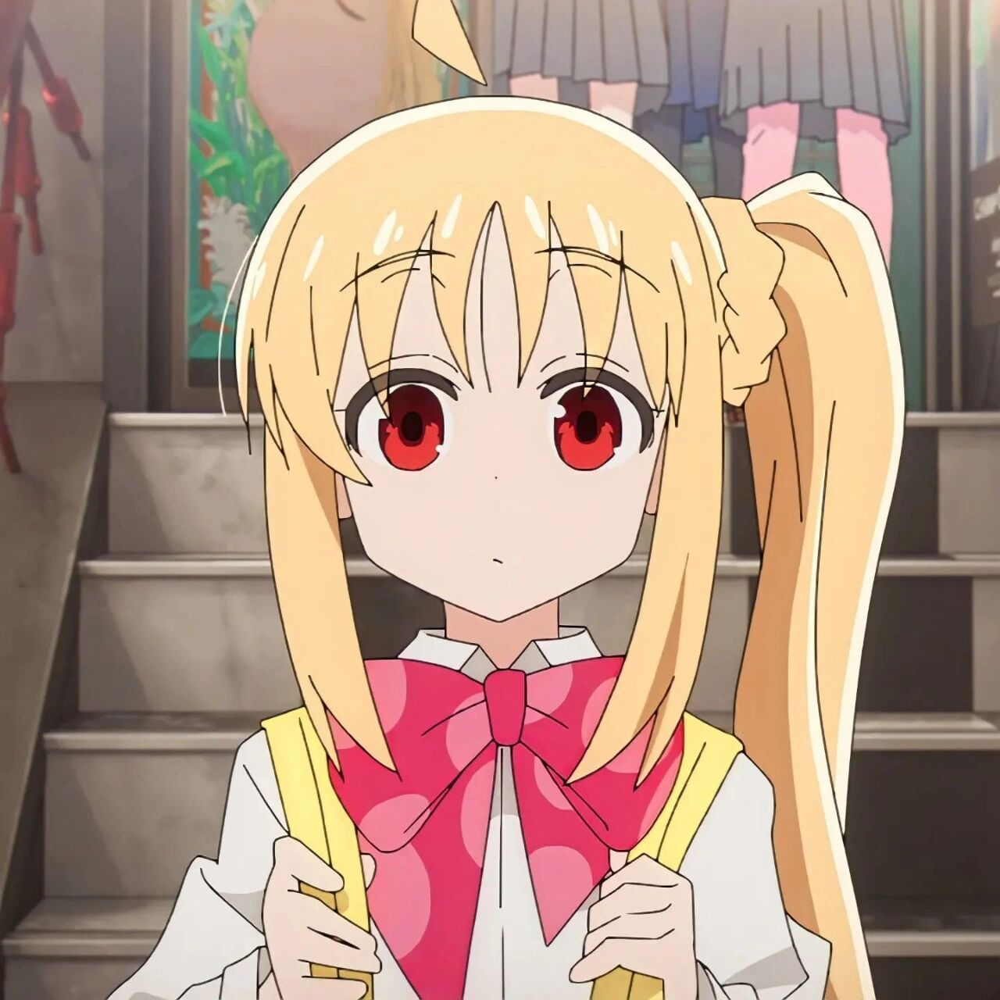
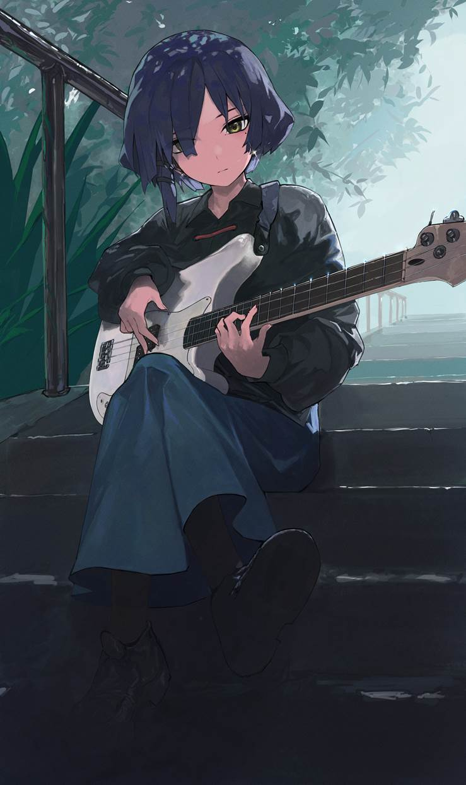
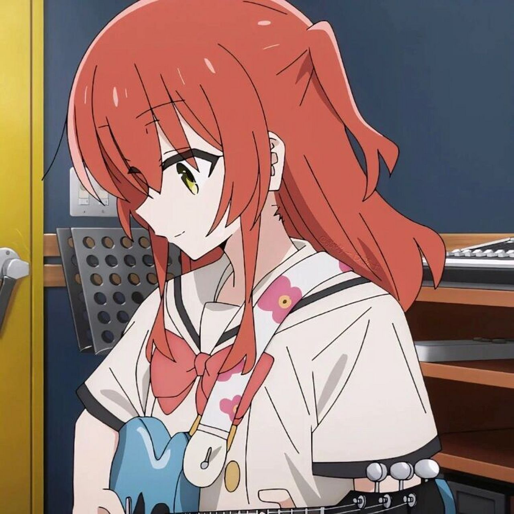
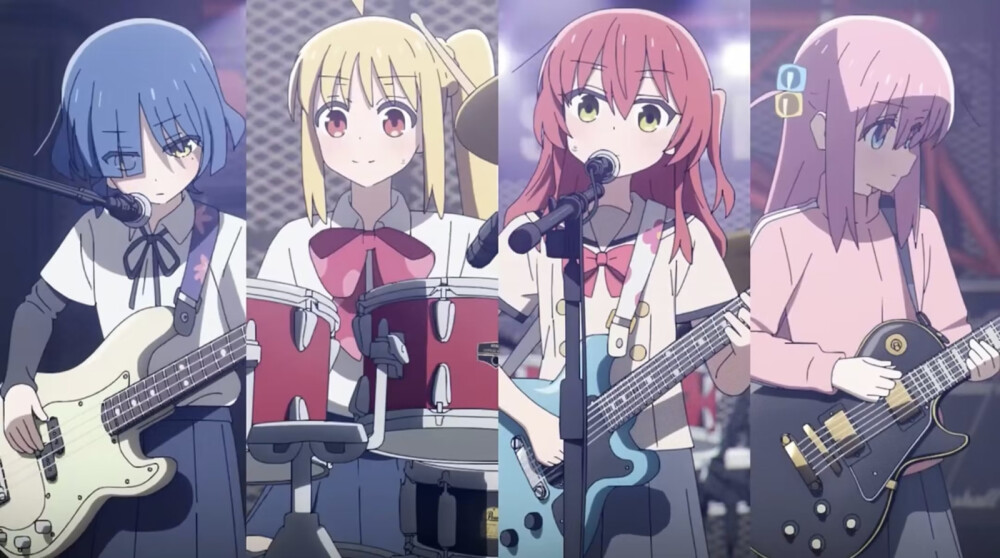

后藤一里ぼっちちゃん
主音吉他 · 结束乐队
「被社会抛弃可是我的拿手好戏！」
粉色头发的社恐少女，现实中说话就发抖，网络上却是百万播放的吉他手「吉他英雄」。抱着吉他的她，就是全世界最勇敢的波奇。


重度社恐的少女后藤一里，梦想成为乐队明星，现实中却连跟人说话都会发抖。直到某天，她被鼓手伊地知虹夏「捡」进下北泽的 Livehouse「STARRY」，加入了结束乐队——从此，那个把房间当避难所的女孩，开始在舞台上发光。
《孤独摇滚！》用夸张到离谱的演出，把社恐日常变成全场爆笑的「名场面」，也让无数人从波奇身上看到那个不敢说话的自己。它不贩卖焦虑，只负责把勇气弹给你听。
吉他、贝斯、鼓、主唱——四个性格完全相反的少女，凑成了这支让人又哭又笑的结束乐队。

「被社会抛弃可是我的拿手好戏！」
粉色头发的社恐少女，现实中说话就发抖，网络上却是百万播放的吉他手「吉他英雄」。抱着吉他的她，就是全世界最勇敢的波奇。

「你就是我的英雄。」
Livehouse「STARRY」的二小姐，把波奇「捡」回乐队的人。永远元气满满，是结束乐队的主心骨，也是所有人的避风港。

「对啊，你不知道吗？」
面无表情的「食草系」贝斯手，对摇滚认真到偏执，却总因买乐器而破产。毒舌之下，藏着对乐队最深的温柔。

「让大家看看吧！后藤同学其实超帅的！」
以为乐队很轻松而加入的天才现充，却意外成了带动全场的太阳。她是第一个发现「吉他英雄」真身的人，也是波奇最坚实的应援。
四名声优亲自献声的乐队同名专辑，把动画里的热门歌曲一次收齐。从 OP《青春コンプレックス》到最终话的《光の中へ》，每一首都值得循环。

一段属于《孤独摇滚！》的时间线——记录波奇酱和大家走过的每一步。
はまじあき在芳文社《Manga Time Kirara MAX》开始连载四格漫画《孤独摇滚！》。
官方宣布动画化决定，由 CloverWorks 负责制作。
全12集开播，全网掀起「孤独摇滚」热潮——社恐波奇酱火遍世界。
乐队同名专辑数字发行（12月28日CD发售），全14曲一次收齐。
荣获 Anime Trending 2022 秋季动画大奖最佳动画等多项荣誉，豆瓣评分至今保持在 9.1。
《劇場総集編ぼっち・ざ・ろっく！》「Re:」「Re:Re:」日本公映，主题曲为《星座になれたら》。
TV动画第2期正式宣布制作，监督由山本ゆうすけ接棒，播出时间待定。
《孤独摇滚（上/下）》登陆中国内地院线——孤独的人们，一起狂欢吧！
留下你想说的话吧——分享入坑经历、最爱的场景、音乐感想，或者单纯喊一句「波奇酱天下第一」。发言会保存在你的浏览器里，欢迎常来。
现实好可怕。但总觉得，接下来会有很多开心的事等着我。
「被社会抛弃可是我的拿手好戏！」
「现实好可怕。但总觉得，接下来会有很多开心的事等着我。」
「你就是我的英雄。」
「请看看结束乐队的结束力吧！！」
「让大家看看吧！后藤同学其实超帅的！」
「对啊，你不知道吗？」